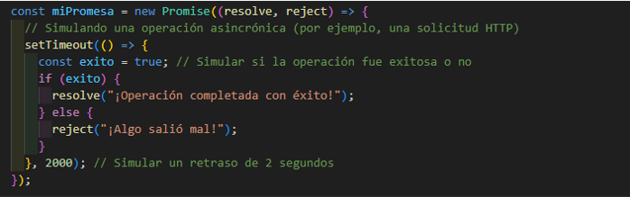
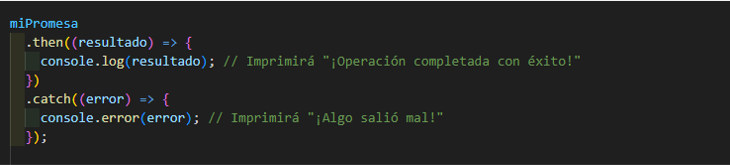
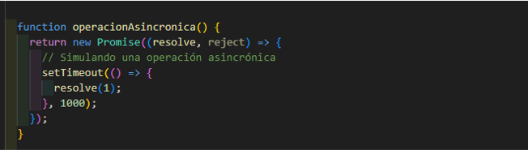
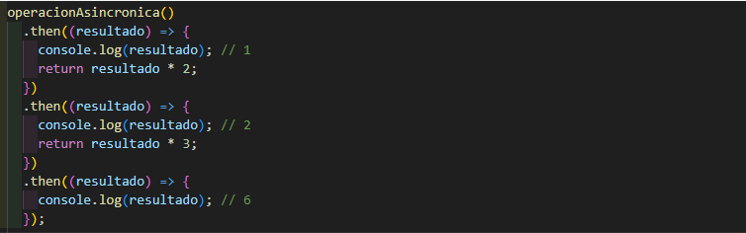
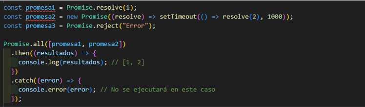
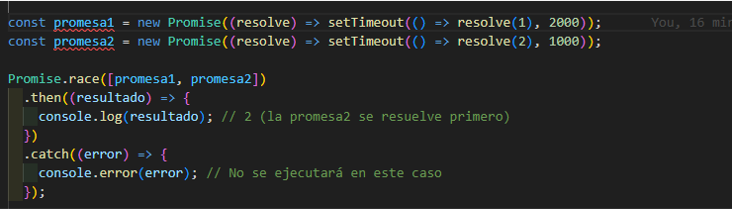

- ¿QUE ES UNA PROMESA EN JS?
En JavaScript, una promesa es un objeto que representa un valor futuro o una operación asincrónica que aún no se ha completado. Es como una promesa en la vida real: te asegura que algo sucederá en el futuro, pero no necesariamente en ese momento exacto.
Imagina que le pides a tu amigo que te preste su bicicleta para ir al trabajo. Tu amigo te hace una promesa de que te prestará su bicicleta mañana por la mañana. Ahora, tienes la promesa de que tendrás una bicicleta para ir al trabajo, pero todavía no tienes la bicicleta físicamente en tus manos.
ESTADOS DE LA PROMESA
Pendiente: Cuando creas una promesa, está en estado "pendiente" porque la operación asociada aún no se ha completado.
Cumplida: Una vez que la operación se completa con éxito, la promesa pasa al estado "cumplida" y te devuelve el resultado.
Rechazada: Si la operación falla, la promesa pasa al estado "rechazada" y te devuelve un motivo de error.
CREACION DE LAS PROMESAS
Puedes crear una promesa usando la sintaxis new Promise(). Dentro del constructor de la promesa, proporcionas una función que toma dos argumentos: resolve y reject. Llamas a resolve cuando la operación se completa con éxito y devuelves el resultado deseado. Llamas a reject si la operación falla y proporcionas un motivo de error.
CONSUMO DE PROMESAS
Una vez que tienes una promesa, puedes "consumirla" usando los métodos .then() y .catch(). El método .then() se ejecuta cuando la promesa se cumple, y el método .catch() se ejecuta cuando la promesa se rechaza.
También puedes encadenar múltiples .then() para manejar múltiples promesas secuenciales.
ENCADENAMIENTO DE PROMESAS
Una de las características poderosas de las promesas es que puedes encadenar múltiples operaciones asincrónicas de manera fácil y legible utilizando el método .then(). Esto se conoce como "encadenamiento de promesas".
 En este ejemplo, cada .then() recibe el resultado de la operación anterior y puede realizar su propia operación antes de pasar el resultado al siguiente .then().
Promise.all():
El método Promise.all() es útil cuando necesitas realizar múltiples operaciones asincrónicas al mismo tiempo y esperar a que todas se completen antes de continuar. Devuelve una única promesa que se cumple cuando todas las promesas dadas se han cumplido o se rechaza tan pronto como una de las promesas dadas es rechazada.
Promise.race():
El método Promise.race() es similar a Promise.all(), pero en lugar de esperar a que todas las promesas se completen, devuelve una promesa que se resuelve o se rechaza tan pronto como una de las promesas dadas se resuelve o se rechaza.
En este ejemplo, aunque promesa1 tarda más tiempo en resolverse, la promesa que se resuelve primero es promesa2, por lo que Promise.race() devuelve el resultado de esa promesa.
Las promesas en JavaScript son una herramienta poderosa para trabajar con operaciones asincrónicas de manera más efectiva y legible. Con funciones como el encadenamiento de promesas, Promise.all(), Promise.race() y async/await, puedes escribir código asincrónico de manera más clara y concisa.